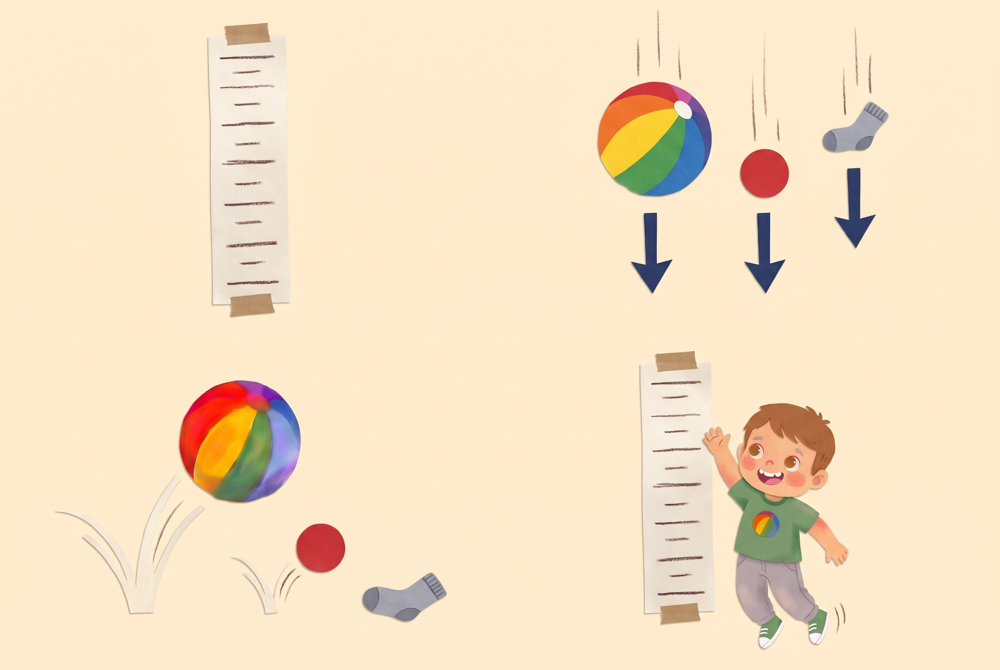
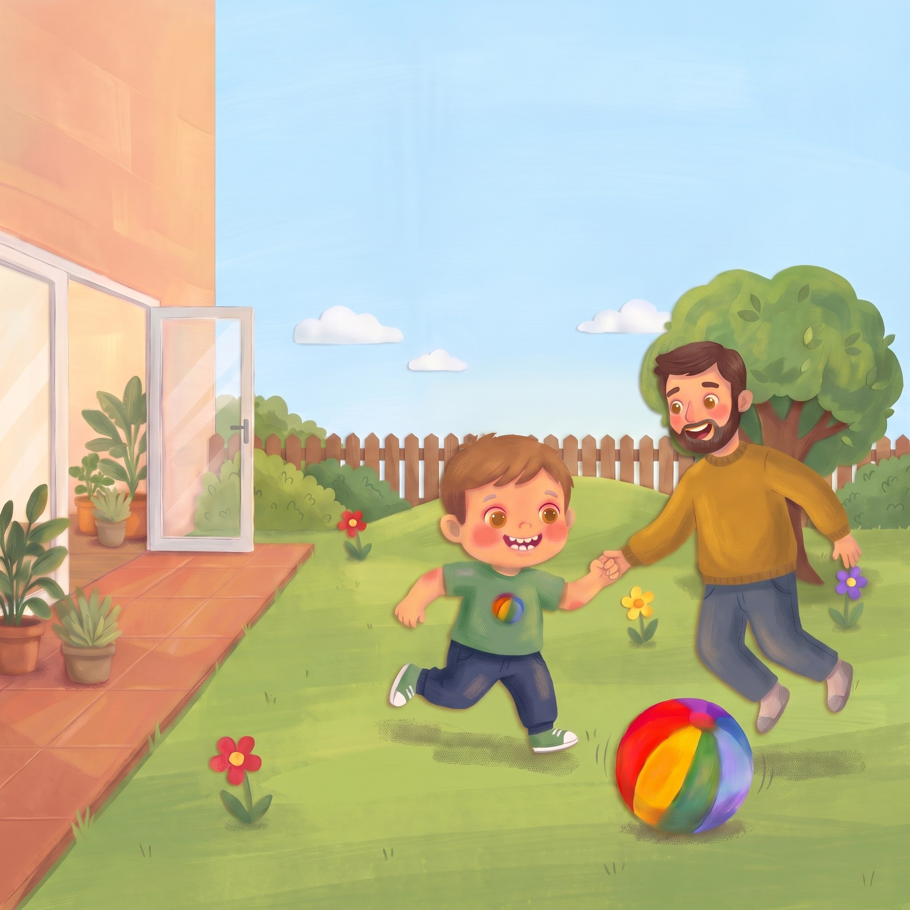

Necesitás: una tira larga de papel, cinta para pegarla en la pared, un lápiz, una pelota grande, una pelota chica y una media enrollada.

| Qué suelto | Yo creo que… | Lo que pasó: ¿cuántas manos subió? |
|---|---|---|
| Pelota grande | ||
| Pelota chica | ||
| Media enrollada | ||
| Yo saltando |
En el desafío, anotá hasta qué rayita llegaron tus manos.

El concepto. La gravedad atrae todo hacia la Tierra, siempre, aunque estemos en el aire. Al saltar, las piernas empujan el piso y el cuerpo sube, pero la gravedad lo va frenando hasta que baja otra vez. Una pelota rebota porque se aplasta un poquito al tocar el piso y vuelve a su forma; en cada rebote pierde algo de impulso, por eso sube cada vez menos y nunca más alto que desde donde se la soltó.
El hito. Muchos chicos empiezan a saltar con los dos pies juntos entre los 2 y los 3 años, más o menos: primero saltitos en el lugar, después hacia adelante y, más adelante, desde un escalón bajo. Cada chico tiene su ritmo; ante cualquier duda, lo mejor es consultar al pediatra.
Seguridad. Mejor que salten en el piso, sobre pasto o una alfombra, y no desde camas, sillones ni lugares altos. Los pediatras recomiendan evitar las camas elásticas en casa a esta edad. Siempre con un adulto cerca y con espacio libre alrededor.
Para charlar después de leer: ¿Qué cosas de tu casa rebotan? ¿Cuáles no rebotan nada? ¿Podés saltar y quedarte en el aire? ¿Por qué no? ¿Cuántas manos medís? ¿Y cuántas mide un adulto?